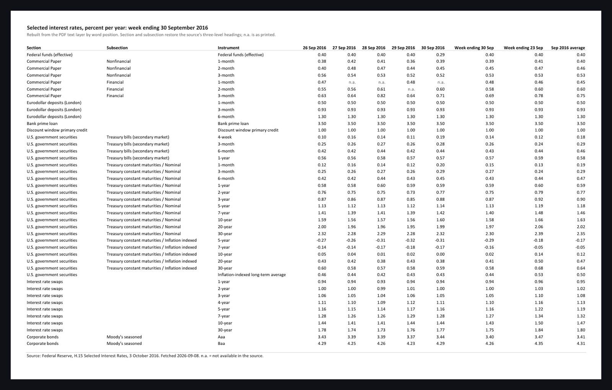

Data extraction · PDF to Excel · public data sample
A PDF table turned into Excel, with every number checked against the source's own arithmetic.
The Federal Reserve's H.15 release prints a 43-row table of interest rates. Its PDF text layer has no table structure and runs words together, so a copy and paste gives you one unusable line per row. This workbook rebuilds the rows, the columns and the three-level headings from the position of every word on the page. Then it checks itself. The Fed defines the published weekly figure as the mean of the five daily values, so each row's average is recomputed and compared. A row that does not tie is a mis-read cell, and it is listed first instead of passed.
43
rows rebuilt from word coordinates across two PDF pages, with section, subsection and instrument restored
42 / 43
rows where the recomputed weekly average ties to the published figure within 0.01
1
row flagged, in words, at the top of the Validation tab, with the difference shown
0
values corrected by hand; n.a. cells stay n.a. and are explained in a legend


How the table was read
- Every word on the page comes with coordinates. The script groups words into lines by vertical position, assigns numeric tokens to columns by order, and infers the heading level from the indent of the label.
- Labels have to be rebuilt because the text layer drops spaces. A fixed dictionary turns "Treasuryconstantmaturities" back into "Treasury constant maturities", and footnote digits glued to labels are stripped.
- The Source tab records the document, its URL, the fetch date, the pages parsed, the method in one paragraph, and the known limits.
What a buyer gets
- A workbook with About, Rates, Validation and Source tabs, formatted to a written standard, that opens without any add-in.
- A validation tab a reader can audit in a minute: which rows tie, which do not, and by how much.
- A script that runs against the next release too, so a recurring extraction becomes a refresh.
Download the workbook and the source PDF it was read from. This is public data, used here as a sample of the deliverable.